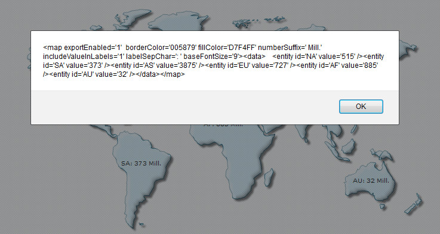
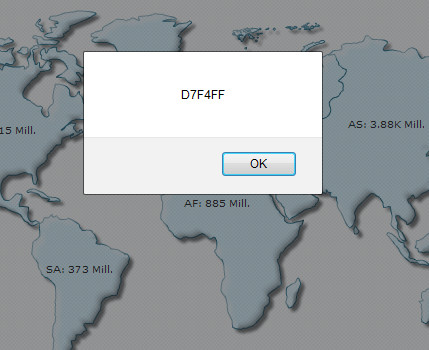

FusionMaps XT uses FusionCharts JavaScript Class that takes care of all the products of FusionCharts Suite XT including FusionMaps XT.
The FusionCharts JavaScript Class allows you to get data back from map. Using API functions you can retrieve the map data, along with all attributes or properties, in XML or JSON format. You can also retrieve the map data in CSV format.
Moreover, you can read all map attributes from a map. By "map attribute", we mean all the XML attributes or JSON properties which are passed through <map> element in map XML data or through map property in map's JSON data.
In this page, we will learn how to:
- Get map data in XML format
- Get map data in JSON format
- Get map data in CSV format
- Retrieve a map attribute from map
You can get map XML data using FusionCharts JavaScript Class API. FusionCharts provides various functions as listed below to achieve this:
- getXMLData() » This function can only be called on FusionCharts JavaScript Object.
- getChartData( format ) » This function takes data-format ("xml" or "json") of the data as parameter. This function can only be called on FusionCharts JavaScript Object.
- getXML() » This legacy function can be called on both FusionCharts HTML Object and FusionCharts JavaScript Object. This function is deprecated.
Let's now see how these functions work in code:
Get XML data from a map using map HTML Object
var mapReference = FusionCharts("myMapId");
var mapXML = mapReference.getXMLData();
Click here to see a complete implementation code sample »
<html>
<head>
<title>Update Map data</title>
<script type="text/javascript" src="../../Maps/FusionCharts.js">
</script>
</head>
<body>
<div id="mapContainer">FusionMaps XT will load here!</div>
<script type="text/javascript"><!--
var myMap = new FusionCharts("../../Maps/FCMap_World.swf", "myMapId", "400", "300" );
myMap.setXMLUrl("Data.xml");
myMap.render("mapContainer");
function showData(format)
{
var mapReference = FusionCharts( "myMapId" );
alert(mapReference.getXMLData());
}
// -->
</script>
<input type="button" onClick="showData('xml');" value="Show XML Data">
</body>
</html>

Other functions
Get XML data from a map using getXMLData() on FusionCharts JavaScript Object
var mapReference = FusionCharts.items[ "myMapId" ]; var mapXML = mapReference.getXMLData();
Get XML from a map using getChartData() function on FusionCharts JavaScript Object
var mapReference = FusionCharts("myMapId");
var mapXML = mapReference.getChartData("xml");
Get XML from a map using getXML() function on FusionCharts HTML Object
var mapReference = FusionCharts("myMapId");
var mapXML = chartReference.getXML();
The function getXML() is deprecated.
You can get map JSON data using FusionCharts JavaScript Class API. FusionCharts provides various functions as listed below to achieve this:
- getJSONData() » This function can only be called on FusionCharts JavaScript Object.
- getChartData( format ) » This function takes data-format ("xml" or "json") of the data as parameter. This function can only be called on FusionCharts JavaScript Object.
Let's now see how these functions work in code:
Get JSON data from a map using getJSONData() function
var mapReference = FusionCharts("myMapId");
var mapJSON = mapReference.getJSONData();
Get JSON data from a map using getChartData() function
var mapReference = FusionCharts("myMapId");
var mapXML = mapReference.getChartData("json");
You can access the data of the map from FusionCharts JavaScript API as well. All you need to do is call the API function - getDataAsCSV() » This legacy function can be called either on FusionCharts HTML Object or FusionCharts JavaScript Object.
Let us see a small sample which gets CSV data from map and display it in a JavaScript alert box as shown in the image below:

<html>
<head>
<title>Getting CSV data from map</title>
<script type="text/javascript" src="Maps/FusionCharts.js">
</script>
</head>
<body>
<div id="mapContainer">FusionMaps XT will load here!</div>
<script type="text/javascript"><!--
var myMap = new FusionCharts( "Maps/FCMap_World.swf", "myMapId", "400", "300", "0" );
myMap.setXMLData("<map borderColor='005879' fillColor='D7F4FF' numberSuffix='M' includeValueInLabels='1' labelSepChar=':' baseFontSize='9'><data><entity id='NA' value='515' /><entity id='SA' value='373'/><entity id='AS' value='3875' /><entity id='EU' value='727' /><entity id='AF' value='885' /><entity id='AU' value='32' /></data></map>");
myMap.render("mapContainer");
// -->
</script>
<input onclick = "alert(FusionCharts('myMapId').getDataAsCSV())" type="button" value="Get CSV Data from map">
</body>
</html>
In the above code, we're first creating a World map with DOM Id as myMapId. We provide the following data to the map and ask it to render:
<map borderColor='005879' fillColor='D7F4FF' numberSuffix='M' includeValueInLabels='1' labelSepChar=':' baseFontSize='9'>
<data>
<entity id='NA' value='515' />
<entity id='SA' value='373'/>
<entity id='AS' value='3875' />
<entity id='EU' value='727' />
<entity id='AF' value='885' />
<entity id='AU' value='32' />
</data>
</map>
Thereafter, we are creating a button, which when clicked, exports CSV data from the map and shows in an alert box. We get the FusionCharts JavaScript Object reference of the map by FusionCharts('myMapId').
onclick = "alert(FusionCharts('myMapId').getDataAsCSV())"
Note that the CSV data provides only the data of the map's dataplot devoid of all properties and trendline definitions.
myMap.getDataAsCSV();
...
FusionCharts.getObjectReference("myMapId").getDataAsCSV();
...
FusionCharts.items["myMapId"].getDataAsCSV();
You can customize the output format of CSV data by setting various map attributes in XML or JSON data. You can set the value separator, value qualifier and whether to show formatted data values. Read Exporting Map Data > Using JavaScript API to know more on the attributes that configure CSV output format.
You can read a particular map property (also known as "map attribute" which is passed through <map> element in map XML data or through map property in maps JSON data) from a map using FusionCharts JavaScript API call - getChartAttribute() » This legacy function can be called either using FusionCharts HTML Object or FusionCharts JavaScript Object.
Let's build a sample which reads the map caption and displays it in a JavaScript alert box as shown in the image below:

<html>
<head>
<title>Getting CSV data from map</title>
<script type="text/javascript" src="Maps/FusionCharts.js">
</script>
</head>
<body>
<div id="mapContainer">FusionMaps XT will load here!</div>
<script type="text/javascript"><!--
var myMap = new FusionCharts( "Maps/FCMap_World.swf", "myMapId", "400", "300", "0" );
myMap.setXMLData("Maps/FCMap_World.swf", "myMapId", "400", "300", "0" );
myMap.setXMLData("<map borderColor='005879' fillColor='D7F4FF' numberSuffix='M' includeValueInLabels='1' labelSepChar=':' baseFontSize='9'><data><entity id='NA' value='515' /><entity id='SA' value='373'/><entity id='AS' value='3875' /><entity id='EU' value='727' /><entity id='AF' value='885' /><entity id='AU' value='32' /></data></map>");
myMap.render("mapContainer");
// -->
</script>
<input onclick = "alert(FusionCharts('myMapId').getChartAttribute('fillColor'))" type="button" value="fillColor of map">
</body>
</html>
The above code does the following:
- It creates a World map
- Creates an HTML button which when clicked will call the getChartAttribute of the rendered map
- Passes the 'fillColor' function as parameter
When the button is clicked, the getChartAttribute() function retrieves the value of fillColor attribute, that is, "D7F4FF" from the map and displays in an alert box. We get the FusionCharts JavaScript Object reference of the map by FusionCharts('myMapId').
To know more on the function getChartAttribute() please read API Reference> Functions page.